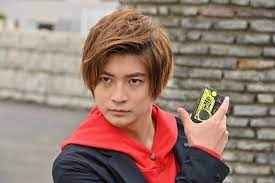

| 名前 | 飛電或人（ひでん・あると） | 
|---|---|
| ≪出演≫ | （たかはし・ふみや） |
亡き父の笑顔が見たい、という思いを実現するべく、お笑い芸人の道を志すが、お笑いのセンスは皆無。売れない芸人として細々と活動していた。 ある日突然、祖父・飛電是之助（ひでん・これのすけ）の遺言により飛電インテリジェンスの二代目社長に任命される。一旦は拒否したものの、暴走するヒューマギアを目の当たりにし、社長の座に就く者のみが使用できるゼロワンドライバーで仮面ライダーゼロワンに変身。飛電インテリジェンス社長に就任し、仮面ライダーゼロワンとして『滅亡迅雷.net』によって暴走するヒューマギアとの戦いに身を委ねる。 飛電がZAIAに買収されたことで社長を退任。新たに「飛電製作所」を立ち上げる。